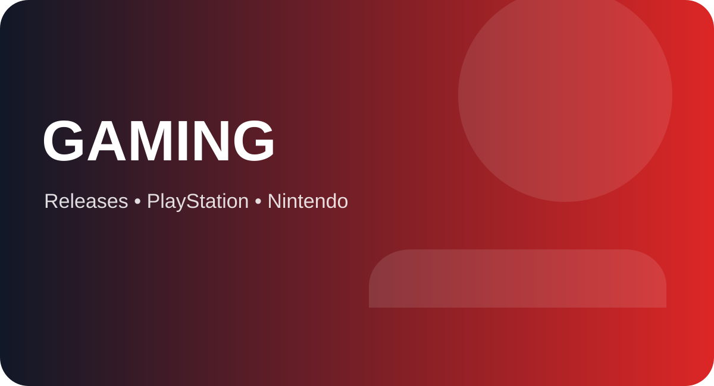

Minecraft Dungeons II launches on September 29, 2026, expanding Mojang's action-RPG spin-off with a new interconnected world, new enemies and a brand-new dimension called the Sift. The sequel builds on the original Minecraft Dungeons formula while changing how players move through its world.
The Sift is the headline feature
The most distinctive addition is the Sift, a completely new dimension that players can access through mysterious rifts. Mojang's Minecraft Live recap describes the Sift as part of a new interconnected Dungeons world, and the company says it is also coming to Minecraft Java and Bedrock Edition in 2027.
The dimension is important because Minecraft's main game has long revolved around three major dimensions: the Overworld, the Nether and the End. Mojang says the Sift will become the fourth dimension in Java and Bedrock, making this one of the largest structural additions to Minecraft's world in many years.
Dungeons II changes how the world works
The original Minecraft Dungeons used a more level-based mission structure. Dungeons II introduces an interconnected world instead. That means the adventure is designed less like a menu of separate levels and more like a connected journey in which different areas lead into one another.
Rifts are part of that exploration model. When players encounter one, they can be transported into the Sift, turning what might have been a normal trip through the Dungeons world into a portal to a completely different environment.
New environments and threats
Mojang has shown areas including the Meadow and the Carapace, as well as an icy cave environment. The Sift itself is described as vibrant and full of mysterious threats, giving the sequel a visual identity that is distinct from the more familiar Minecraft landscapes.
The game also adds new mobs and a continuing emphasis on gear. Because Dungeons II is an action RPG, the appeal is not just seeing a new landscape; players need to learn enemy patterns, improve equipment and adapt their combat approach as the adventure becomes more demanding.
You do not need the first game to start
One useful detail for new players is that Minecraft says you do not need to have played the original Minecraft Dungeons to play Dungeons II. Familiarity with the first game can improve the experience, but the sequel is designed to stand on its own.
That makes the September 29 release more accessible than a sequel that assumes years of knowledge. Players can jump in for the new story, systems and world without first completing the earlier title.
Platforms and Game Pass
Minecraft lists Minecraft Dungeons II for Steam, Xbox Series X|S, PlayStation 5, Nintendo Switch and Nintendo Switch 2. The company also notes that playing both Minecraft Dungeons I and Dungeons II through Game Pass can qualify for the special Hero Cape reward when the same Microsoft account is used.
The broad platform list is significant because Minecraft's audience is spread across PC and consoles. Keeping the sequel available across several ecosystems gives players more flexibility over where they want to play their co-op adventure.
Why the Sift matters to regular Minecraft
The biggest long-term story may actually be outside Dungeons II. Mojang says the Sift is coming to Java and Bedrock Edition in 2027. That means the sequel is effectively providing the first hands-on look at a dimension that will later become part of the main Minecraft experience.
For builders and survival players, a new dimension creates more than another place to explore. It can introduce new blocks, mobs, resources, structures, travel routes and eventually new gameplay strategies. Mojang has not yet revealed every detail of the 2027 implementation, so some of those questions remain open.
What players should watch after launch
Once Dungeons II is live, the interesting questions will be how the interconnected map changes pacing, how often players encounter the Sift and how the new gear and enemies affect co-op strategies. Those details are difficult to judge from trailers alone.
The sequel is therefore arriving with two stories at once: it is a new action-RPG game today, and it is also an early preview of a new dimension for the main Minecraft sandbox in 2027.
Sources
Minecraft — Minecraft Live September 2026 recap
Minecraft — Dungeons II gameplay trailer and the Sift
Minecraft — About Dungeons II, platforms and release date